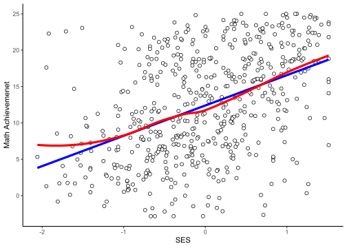
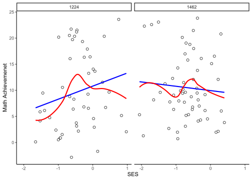
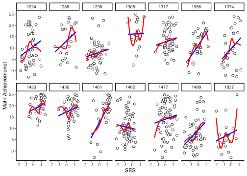

Introduction to Multilevel Modeling
Revealjs Presentation
If you want to see the presentation in full screen go to Other Formats on the right.
Preface: Software I
- The following packages are used:
- Install packages when not already installed:
Preface: Software II
Print list of packages and cite them via Pandoc citation.
Show/hide fenced code
- merTools (v0.6.1, Knowles et al., 2023)
- lme4 (v1.1.34, Bates et al., 2023)
- flextable (v0.9.4, Gohel & Skintzos, 2023)
- psych (v2.3.9, Revelle, 2023)
- ggplot2 (v3.5.0, Wickham et al., 2023)
Preface: Dataset
We use the HSB dataset from the merTools package (Knowles et al., 2023):
schid minority female ses mathach size schtype meanses
1 1224 0 1 -1.528 5.876 842 0 -0.428
2 1224 0 1 -0.588 19.708 842 0 -0.428
3 1224 0 0 -0.528 20.349 842 0 -0.428
4 1224 0 0 -0.668 8.781 842 0 -0.428
5 1224 0 0 -0.158 17.898 842 0 -0.428
6 1224 0 0 0.022 4.583 842 0 -0.428Why multilevel modelling?
Environment (often) shows natural hierarchical structures (e.g., students nested within classes/schools, time points within persons)
-
The hierarchical structures may (!) lead to dependency in data
- ignoring the hierarchical data structure leads to underestimation of standard errors and biased test statistics/p-values
- violation of the independent and identically distributed residuals (i.d.d) assumption
-
Hierarchical structures as a research object/topic
- examining relations on the different level (e.g., BFLPE or ecological fallacy)
- effects/relations vary between clusters
for a graphical introduction see http://mfviz.com/hierarchical-models/
Preliminaries: Logic of hierarchical linear models I
Example: The relation between socio-economic status and achievement across all (actually a subsample) schools
Code
dat |>
(\(d) d[1:550,])() |>
ggplot(aes(x = ses, y = mathach)) +
geom_point(shape=21,
fill="white",
color="black",
size=2) +
geom_smooth(method='lm',
formula=y~x,
color = "blue",
se = F,
linewidth = 1.5) +
geom_smooth(method='loess',
formula=y~x,
color = "red",
se = F,
linewidth = 1.5) +
labs(x = "SES",
y = "Math Achievemenet") +
theme_classic() 
Call:
lm(formula = mathach ~ ses, data = (function(d) d[1:550, ])(dat))
Residuals:
Min 1Q Median 3Q Max
-18.0224 -4.5656 0.1607 4.8815 17.8936
Coefficients:
Estimate Std. Error t value Pr(>|t|)
(Intercept) 12.3956 0.2806 44.17 <2e-16 ***
ses 4.1711 0.3551 11.74 <2e-16 ***
---
Signif. codes: 0 '***' 0.001 '**' 0.01 '*' 0.05 '.' 0.1 ' ' 1
Residual standard error: 6.58 on 548 degrees of freedom
Multiple R-squared: 0.2011, Adjusted R-squared: 0.1996
F-statistic: 137.9 on 1 and 548 DF, p-value: < 2.2e-16Preliminaries: Logic of hierarchical linear models II
Example: The relation between socio-economic status and achievement in two selected schools
Code
dat |>
subset(subset = schid == 1224 | schid == 1462) |>
ggplot(aes(x = ses, y = mathach)) +
geom_point(shape=21,
fill="white",
color="black",
size=2) +
geom_smooth(method='lm',
formula=y~x, color = "blue", se = F) +
geom_smooth(method='loess',
formula=y~x, color = "red", se = F) +
facet_wrap(~schid, nrow = 1) +
labs(x = "SES",
y = "Math Achievemenet") +
theme_classic() 
\(𝐸(Y│X)= 10.81 + 2.51X\)
\(E(Y│X)=9.994−0.82X\)
Preliminaries: Logic of hierarchical linear models III
Example: The relation between socio-economic status and achievement separated in J (14) schools
Code
ggplot(dat[1:550,],
aes(x = ses, y = mathach)) +
geom_point(shape=21,
fill="white",
color="black",
size=2) +
geom_smooth(method='lm',
formula=y~x,
se = F,
color = "blue") +
geom_smooth(method='loess',
formula=y~x,
se = F,
color = "red") +
facet_wrap(~schid, nrow = 2) +
labs(x = "SES",
y = "Math Achievemenet") +
theme_classic()
Excursion: Fixed effects approach I
One way to address the hierarchical data structure is to include indicator variables (i.e., dummy variables) for the clusters in the model → fixed effects approach
Using reference coding we build \((k-1)\) indicator variables \(I_c\)
Model equation (see Equation 1):
\[ Y = \beta_0 + \beta_1X + \beta_2I_2 + \beta_3I_3 + \dots + \beta_kI_k \qquad(1)\]
Excursion: Fixed effects approach II
Example: The relation between socio-economic status \((X)\) and achievement \((Y)\) in J (160!) schools
Model equation (see Equation 2):
\[ Y = \beta_0 + \beta_1X + \sum\limits_{2}^{160} \beta_kI_k \qquad(2)\]
- The regression has already 162 parameters!
- Assumption: same relation between \(Y\) and \(X\) within all schools
- “Solution”: to include 159 interaction terms between SES and indicator variables
- “Problem”: Overfitting & number of parameters → random effects approach (see next slides)
Random effects approach
Instead of estimating a huge number of regression coefficients, it is possible to estimate only the distribution parameters (i.e., expected value and variance) of these parameters across clusters
In doing so, there are additional assumptions:
Level 1 residuals within all clusters follow a (multivariate) normal distribution (when the outcome is continuous): \(r_{ij} \sim N(0,\sigma^2)\)
-
Level 2 residuals (i.e., random effects) follow a multivariate normal distribution
- let vector \(\mathbf{u} = (u_{0j}, u_{1j}, \dots, u_{kj})\) of level-2 residuals in a two-level model with \(k\) predictors \(X_{ij1}, X_{ij2}, \dots, X_{ijk}\), then \(u \sim N(0,\Sigma_u)\)
- From the example above (i.e., a two-level model with one level-1 predictor (\(X_{ij}\)) with random effects)
\[ \left( \begin{matrix}u_{0j} \\ u_{1j}\end{matrix}\right) \sim N\left(\begin{bmatrix} 0 \\ 0\end{bmatrix}, \begin{bmatrix} VAR(u_{0j}) & COV(u_{0j}, u_{1j}) \\ COV(u_{1j}, u_{0j}) & VAR(u_{1j})\end{bmatrix}\right) \]
Model Equation
Meaning of the parameters
-
Random intercept: \(\beta_{0j} = \gamma_{00} + u_{0j}\)
- \(E(\beta_{0j}) = \gamma_{00}\) → average cluster intercept across the cluster
- \(VAR(\beta_{0j}) = \tau_{00}\) → variance of cluster intercepts
-
Random slope: \(\beta_{1j} = \gamma_{01} + u_{1j}\)
- \(E(\beta_{1j}) = \gamma_{01}\) → average slope across the cluster
- \(VAR(\beta_{1j}) = \tau_{11}\) → variance of slopes
Covariance between slopes and intercepts: \(COV(\beta_{0j}, \beta_{1j}) = \tau_{01}\)
Fixed effects: \(\gamma_{00}, \gamma_{01}\)
Random effects/residuals: \(u_{0j}, u_{1j}, r_{ij}\)
A closer look at the random effects and residuals I
Random effects/ level 2 residuals:
- Intercept
\[ \begin{aligned} & \beta_{0j} = \gamma_{00} + u_{0j} \text{(rearrange equation)} \\ & $u_{0j} = \beta_{0j} - \gamma_{00} \end{aligned} \]
→ deviation of the cluster specific intercept (\(\beta_{0j}\)) from the average intercept across cluster (\(\gamma_{00}\))
- Slope
\(\beta_{1j} = \gamma_{01} + u_{1j}\) (rearrange equation)
\(u_{1j} = \beta_{1j} - \gamma_{01}\) → deviation of the cluster specific slope (\(\beta_{1j}\)) from the average slope across cluster (\(\gamma_{01}\))
A closer look at the random effects and residuals II
Random effects/ level 1 residual:
Recall EQ@ref(eq:comb-eq):
\(Y_{ij} = \gamma_{00} + u_{0j} + (\gamma_{01} + u_{1j})X_{ij} + r_{ij}\) (rearrange equation)
\(r_{ij} = Y_{ij} - \gamma_{00} - u_{0j} - \gamma_{01}X_{ij} - u_{1j}X_{ij}\) → deviation of the observed value (\(Y_{ij}\)) from the conditional expected value, given the predictor (\(X_{ij}\)) in cluster \(j\)
Overview of Multilevel Models
- One-Way ANOVA with Random Effects
- Model with level-2 predictors: Means-as-Outcomes Regression
- Random-ANCOVA (only Random-Intercept Model)
- Random-Coefficient Modell (Random-Intercept + Random-Slope Model)
- Model with level-2 predictors + cross-level interaction
- … there are more!